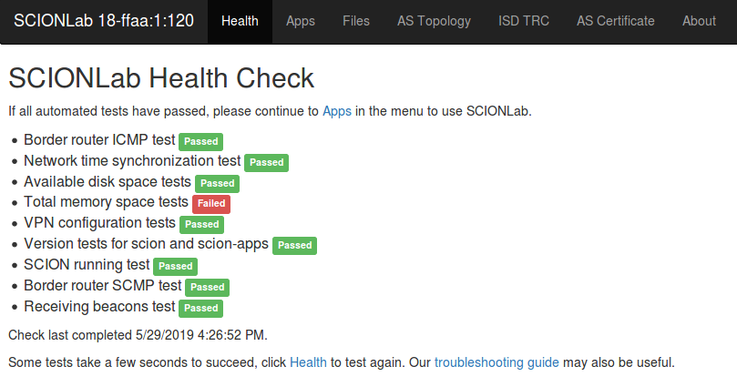

Webapp AS Visualization¶
Webapp is a Go application that will serve up a static web portal to make it easy to visualize and experiment with SCIONLab test apps on a virtual machine.
Packaged Setup/Run¶
To install webapp, run:
sudo apt install scion-apps-webapp
See Installation for details.
Start the webapp service:
sudo systemctl start scion-webapp
Ensure the webapp service is running:
sudo systemctl status scion-webapp
Now, open a web browser at http://127.0.0.1:8000, to begin.
Logs from webapp can be monitored:
journalctl -u scion-webapp -e
You won't need to add all the parameters yourself as the scion-webapp.service will do this for you, but as background information the service will run with the following command-line:
scion-webapp \ -a 0.0.0.0 \ -p 8000 \ -r /var/lib/scion/webapp/web/data \ -srvroot /var/lib/scion/webapp/web \ -sabin /usr/bin/scion \ -sroot /etc/scion \ -sbin /usr/bin \ -sgen /etc/scion/gen \ -sgenc /var/lib/scion \ -slogs /var/log/scion
Browser AS Visualizations¶
Several menu options are available at the top of each webapp page, which are outlined below. Each of the features below use your SCIONLab IA the the source address.
Health¶
The Health tab is the landing page for webapp that will automatically test your SCIONLab configuration for configuration and communication health. Additional help is available in our troubleshooting guide, if needed.

Apps¶
The Apps tab provides a portal to SCIONLab Apps, and uses your Source IA and a Destination IA you specify to test with. Some default Destination IAs are already provided for you, but you can always change them and click Update Paths.
Paths¶
The announced paths will be displayed in a combined topology in the window. To view the details of a specific path expand the path's data by clicking on the path number in the window on right side. You may also view a global map of selected paths by clicking the Map switch.
Execute¶
See the SCIONLab Apps Visualization page for details about running SCIONLab Apps.

Files¶
The Files menu on the page will allow you to navigate and serve any files on the SCIONLab node from the read-only (-r) directory you specified (if any) when starting scion-webapp.
AS Topology¶
The composition of services and border routers for the Source AS will be displayed in the AS Topology tab. Click on any circle to view the details of that server or router.
Tip
The big circle can be clicked on as well to view details of the Source AS.

ISD TRC¶

AS Certificate¶